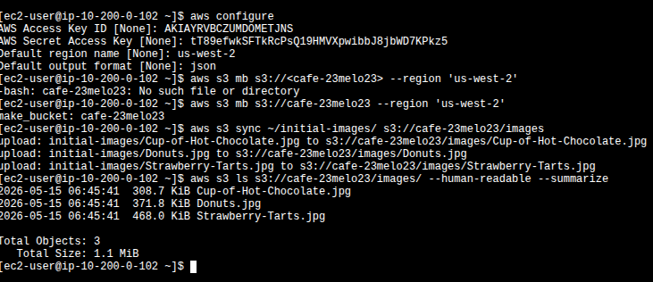
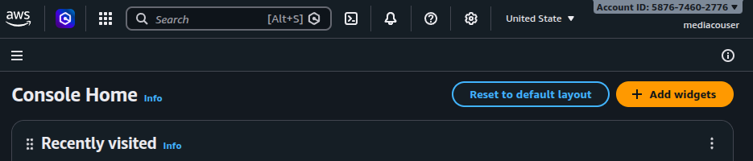
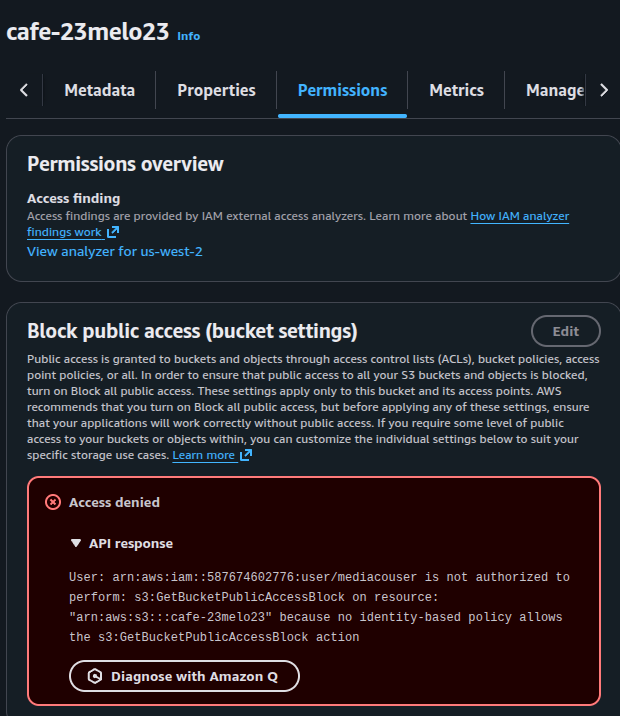
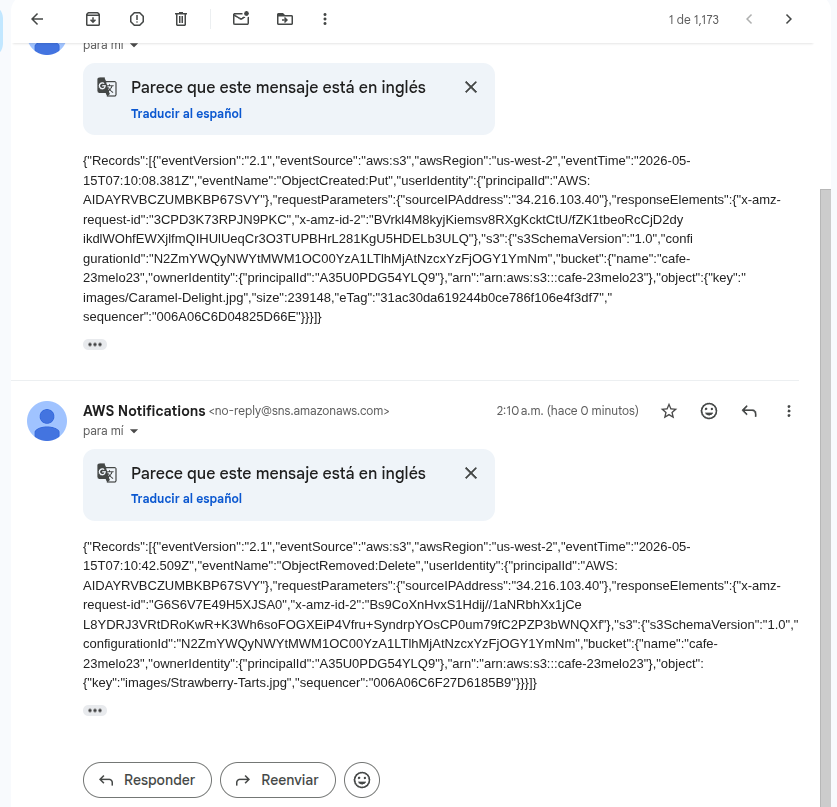

Summary & architecture
The lab builds a small file-sharing system. An external user uploads or deletes
product images inside cafe-23melo23/images/. Every mutation triggers an
SNS notification that emails the admin. The interesting parts are which
events fire (created / removed only, not get-object) and which
operations the external user is denied (anything outside the prefix, anything that
changes ACLs or bucket-level metadata).
images/ prefix.
ObjectCreated:* / ObjectRemoved:* on prefix.
s3NotificationTopic receives the event JSON from S3.
Records[] payload.
S3 with prefix-scoped access
All GetObject/PutObject/DeleteObject
calls are restricted to cafe-*/images/* via the
mediaCoPolicy. Nothing else in the bucket is reachable.
SNS as the fan-out for change events
S3 cannot send email directly. The pattern is
S3 → SNS → email subscription. The topic's access policy lets
S3 publish; the subscription delivers to the admin.
What this proves
The denials are not bugs — they are the deliverable.
GetBucketPublicAccessBlock and put-object-acl both
fail on mediacouser, which is exactly what least privilege should look like.
Task 1 — CLI Host, bucket creation & initial sync
Configure the AWS CLI on the pre-provisioned CLI Host with the lab's
voclabs credentials, create the share bucket, and push the three seed
images into the images/ prefix.
Configure the CLI
aws configure was run with the lab's Access Key / Secret Access Key,
region us-west-2, output format json. Standard step, no
evidence needed — the next commands prove the profile is active.
Create the bucket and sync the seed images
Bucket name chosen: cafe-23melo23 (must start with cafe-,
lowercase only, globally unique). Three product images were synced from
~/initial-images/ under the images/ prefix:
Cup-of-Hot-Chocolate.jpg, Donuts.jpg, Strawberry-Tarts.jpg.
aws s3 mb s3://cafe-23melo23 --region 'us-west-2'
aws s3 sync ~/initial-images/ s3://cafe-23melo23/images
aws s3 ls s3://cafe-23melo23/images/ --human-readable --summarize
aws configure with lab credentials → first
mb attempt fails because the bracketed placeholder was kept literal →
retry with the clean bucket name succeeds → sync uploads the three
seed images → ls --summarize reports 3 objects, 1.1 MiB
total.
aws s3 mb s3://<cafe-23melo23> with the
brackets copied verbatim from the lab guide. Bash interpreted < as
input redirection and tried to open a file called cafe-23melo23, which
does not exist. Result: -bash: cafe-23melo23: No such file or directory.
Fix: drop the angle brackets — they are placeholder syntax in the manual,
not literal characters. This is the same trap with any
<value> placeholder in a shell command.
Task 2 — IAM: the mediaco group & least privilege
The lab pre-creates a group called mediaco with two attached
policies: IAMUserChangePassword (AWS-managed, lets the user rotate
their own password) and mediaCoPolicy (custom, the interesting one).
mediacouser is a member of the group and inherits both.
The three Sid statements in mediaCoPolicy
Sid 1 — AllowGroupToSeeBucketListInTheConsole
Allows s3:ListAllMyBuckets and s3:GetBucketLocation on
*. Without this, the S3 console is empty when mediacouser signs in —
they can't even see the bucket exists.
Sid 2 — AllowRootLevelListingOfTheBucket
Allows s3:ListBucket on arn:aws:s3:::cafe-*. This is
what makes the bucket clickable in the console and lets the user enumerate the
first-level prefixes (i.e. see the images/ folder).
Sid 3 — AllowUserSpecificActionsOnlyInTheSpecificPrefix
The core of the policy. Grants s3:GetObject,
s3:PutObject, s3:DeleteObject (plus the
*Version variants) on arn:aws:s3:::cafe-*/images/*.
Everything not under images/ is implicitly denied, and so
are operations like s3:PutObjectAcl or
s3:GetBucketPublicAccessBlock.
Sign-in evidence as mediacouser
An access key was minted for mediacouser (kept for Task 5's CLI tests)
and the console sign-in link was used in an incognito session to keep both
identities active in parallel.

5876-7460-2776. The
voclabs session stays open in a separate browser for the admin
tasks.
Task 3 — Testing permissions: happy path & the expected deny
Three authorized operations from the console as mediacouser, then the unauthorized case that the policy is designed to block.
View — GetObject
Opened cafe-23melo23/images/Donuts.jpg from the S3 console.
Worked — the policy grants s3:GetObject inside the prefix.
Upload — PutObject
Uploaded a local image into images/ via the console's Upload
wizard. Worked — Sid 3 covers s3:PutObject on
cafe-*/images/*.
Delete — DeleteObject
Deleted Cup-of-Hot-Chocolate.jpg using the typed-confirmation
dialog. Worked — Sid 3 also covers s3:DeleteObject.
Permissions tab — DENIED
Opening the Permissions tab of the bucket returns
Access denied on
s3:GetBucketPublicAccessBlock. This is the policy working as
intended.

cafe-23melo23 while signed in as mediacouser.
The error message is the deliverable: least privilege confirmed —
the policy does not grant any bucket-level metadata or configuration action, so
IAM denies it by default.
s3:GetBucketPublicAccessBlock denial proves the policy's scope is
tight enough to refuse anything outside the contract.
Task 4 — SNS event notifications
Four moving parts: create the SNS topic, give S3 permission to publish to it, subscribe an email endpoint, and finally attach the event configuration to the bucket. No console screenshots from this segment — the JSON below is the evidence, and Task 5 closes the loop with the delivered emails.
4.1 — Create the topic
A Standard SNS topic named s3NotificationTopic was
created in the same region as the bucket. The topic's ARN was copied for the
next two JSON files.
4.2 — Topic access policy (S3PublishPolicy)
The topic needs an access policy that lets the S3 service principal
(s3.amazonaws.com) publish messages, but only when those messages
originate from this bucket. The ArnLike condition on
aws:SourceArn is what enforces that scoping.
{
"Version": "2008-10-17",
"Id": "S3PublishPolicy",
"Statement": [
{
"Sid": "AllowPublishFromS3",
"Effect": "Allow",
"Principal": {
"Service": "s3.amazonaws.com"
},
"Action": "SNS:Publish",
"Resource": "arn:aws:sns:us-west-2:587674602776:s3NotificationTopic",
"Condition": {
"ArnLike": {
"aws:SourceArn": "arn:aws:s3:*:*:cafe-23melo23"
}
}
}
]
}4.3 — Email subscription
Created an Email subscription to the topic with a personal address as the endpoint. AWS sent the standard confirmation email — clicking Confirm subscription activated the endpoint. From this point on the topic has one confirmed deliverable subscriber.
4.4 — Wire the bucket to the topic
The event-notification configuration JSON was written into
s3EventNotification.json on the CLI Host. It subscribes to two
event families and filters on the images/ prefix only — anything
outside images/ is silently ignored by the rule.
{
"TopicConfigurations": [
{
"TopicArn": "arn:aws:sns:us-west-2:587674602776:s3NotificationTopic",
"Events": ["s3:ObjectCreated:*", "s3:ObjectRemoved:*"],
"Filter": {
"Key": {
"FilterRules": [
{ "Name": "prefix", "Value": "images/" }
]
}
}
}
]
}aws s3api put-bucket-notification-configuration \
--bucket cafe-23melo23 \
--notification-configuration file://s3EventNotification.json
Immediately after attaching the configuration, S3 sent a sanity-check event:
a payload with "Event": "s3:TestEvent" arrived at the mailbox.
That message confirms the topic-access-policy chain works end-to-end before any
real object event fires.
Task 5 — End-to-end test from mediacouser via CLI
Switched the CLI Host's profile to mediacouser's access keys (second
aws configure pass) and exercised put, get,
delete, and the deny case for put-object-acl. Only put
and delete generate SNS emails — get does not, because the filter only matches
ObjectCreated:* / ObjectRemoved:*.
| Operation | Command | SNS email? | Result |
|---|---|---|---|
| Put | aws s3api put-object --bucket cafe-23melo23 --key images/Caramel-Delight.jpg --body ~/new-images/Caramel-Delight.jpg |
Yes — ObjectCreated:Put |
OK · returns ETag |
| Get | aws s3api get-object --bucket cafe-23melo23 --key images/Donuts.jpg Donuts.jpg |
No — reads are not in the filter | OK · file downloaded |
| Delete | aws s3api delete-object --bucket cafe-23melo23 --key images/Strawberry-Tarts.jpg |
Yes — ObjectRemoved:Delete |
OK · object removed |
| Put ACL (unauthorized) | aws s3api put-object-acl --bucket cafe-23melo23 --key images/Donuts.jpg --acl public-read |
— | AccessDenied · expected |

no-reply@sns.amazonaws.com. Top message:
ObjectCreated:Put for images/Caramel-Delight.jpg
(239,148 bytes). Bottom message: ObjectRemoved:Delete for
images/Strawberry-Tarts.jpg. Each payload carries the full
Records[] array with bucket name, owner principalId, source IP,
and request IDs.
get-object is intentionally silent.
The event configuration in §4.4 only subscribes to ObjectCreated:*
and ObjectRemoved:*. s3:ObjectAccessed:* exists but
was deliberately not registered — flooding the admin with one email per read
would be useless noise. The filter is part of the design, not a missing piece.
Errors & expected denials — the proof
Three documented failures during the lab. The first is a real user mistake worth keeping as a lesson. The other two are the policy doing its job.
① Literal angle brackets in aws s3 mb
- Symptom
-bash: cafe-23melo23: No such file or directoryright after runningaws s3 mb s3://<cafe-23melo23> --region 'us-west-2'- Root cause
- The lab guide uses
<cafe-xxxnnn>as a placeholder. Bash sees<as input redirection and tries to open a file namedcafe-23melo23beforeawsever runs. - Fix
- Re-run without the angle brackets:
aws s3 mb s3://cafe-23melo23 --region 'us-west-2'
Lesson: never paste a manual's <placeholder>
syntax into a shell verbatim. The brackets aren't decoration — they're
metacharacters. Same trap applies to $, !,
*, {, } in unquoted strings.
② s3:GetBucketPublicAccessBlock denied as mediacouser
- Symptom
- S3 console Permissions tab shows
Access deniedwith the API response naming the user, the action, and the resource. - Root cause
- The
mediaCoPolicyonly grants object-level actions insidecafe-*/images/*. Bucket-level metadata calls are not in any allow statement, so IAM's default-deny applies. - Fix
- None — this is the desired behavior. The external user is not supposed to inspect or change bucket configuration.
Lesson: a clean denial on a sibling action is the cleanest signal that a policy is correctly scoped. If this had succeeded, the policy would be too permissive and need tightening.
③ put-object-acl --acl public-read denied as mediacouser
- Symptom
An error occurred (AccessDenied) when calling the PutObjectAcl operation: Access Denied- Root cause
s3:PutObjectAclis not in themediaCoPolicyallow set. Even though the object lives inside the user's allowed prefix, changing its visibility is a separate action that was deliberately excluded.- Fix
- None — expected. An external partner uploading product photos has no business making them publicly readable.
Lesson: S3 access control has multiple orthogonal axes —
GetObject ≠ PutObjectAcl, PutObject
≠ PutBucketPolicy. A well-written policy enumerates only the
operations the role actually needs, even when they look related.
Concepts & takeaways
-
Prefix-scoped IAM policies are how S3 implements multi-tenant
buckets without splitting buckets. The wildcard
arn:aws:s3:::cafe-*/images/*on Sid 3 is what isolates mediacouser from anything outside the contract. -
S3 cannot send email. The canonical pattern for "notify me on
bucket change" is
S3 event notification → SNS topic → email subscription. The topic's access policy + the bucket's notification configuration are the two halves of the link; both must be in place. -
The
ArnLikecondition onaws:SourceArninside the SNS access policy prevents the confused-deputy problem — only this specific bucket can publish to this topic, not any other S3 bucket in the account. -
Event filters are part of the design. Subscribing to
s3:ObjectAccessed:*would have generated one email per read, drowning the admin in noise. Choosing onlyObjectCreated:*andObjectRemoved:*is the correct trade-off for an audit-of-changes use case. -
Default deny in IAM means a missing action in the policy
behaves the same as an explicit deny. The mediacouser case study shows three
examples: bucket metadata, ACL mutation, root-of-bucket uploads — none of them
require an explicit
Denystatement to be blocked.
CLI reference
| Phase | Command | Purpose |
|---|---|---|
| CLI setup | aws configure |
Switch the CLI Host between voclabs and mediacouser credentials. |
| Bucket create | aws s3 mb s3://<bucket> --region 'us-west-2' |
Create the share bucket. Region required for buckets outside us-east-1. |
| Bulk upload | aws s3 sync ~/initial-images/ s3://<bucket>/images |
One-way mirror of a local folder into a prefix. |
| Inventory | aws s3 ls s3://<bucket>/images/ --human-readable --summarize |
List the prefix with size totals. |
| Wire events | aws s3api put-bucket-notification-configuration --bucket <bucket> --notification-configuration file://s3EventNotification.json |
Attach the SNS event configuration to the bucket. |
| Put (mediacouser) | aws s3api put-object --bucket <bucket> --key images/<file> --body <path> |
Authorized — triggers ObjectCreated:Put. |
| Get (mediacouser) | aws s3api get-object --bucket <bucket> --key images/<file> <out> |
Authorized — does not trigger an email. |
| Delete (mediacouser) | aws s3api delete-object --bucket <bucket> --key images/<file> |
Authorized — triggers ObjectRemoved:Delete. |
| ACL (mediacouser) | aws s3api put-object-acl --bucket <bucket> --key images/<file> --acl public-read |
Denied — proves the policy excludes ACL mutations. |